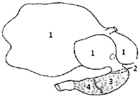
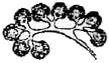
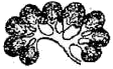
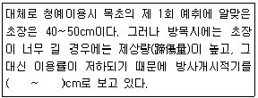
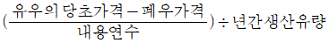
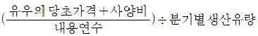
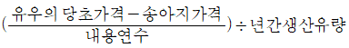
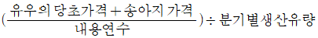

축산기능사 (2011-07-31 기출문제)
1과목: 축산개론
1. 난자와 정자가 수정이 이루어지는 부위는?
- 질
- 자궁
- 난관
- 난소
(정답률: 80%)

2. 반추동물의 위 모양 유문샘부에 해당하는 곳은?

- 1
- 2
- 3
- 4
(정답률: 80%)
3. 칠면조의 품종이 아닌 것은?
- 브론즈종
- 내러갠싯종
- 백색 홀랜드종
- 톨루즈종
(정답률: 67%)
4. 다음 그림 중 소의 신장에 해당 되는 것은?


(정답률: 81%)
5. 번식에 관계하는 호르몬 중 자궁을 수축시켜 출산을 촉진시키고 젖 배출을 돕는 호르몬은?
- 에스트로겐
- 테스토스테론
- 옥시토신
- 프로게스테론
(정답률: 83%)
6. 다음 돼지 품종 중 미국이 원산이며 털빛이 적갈색으로 도체율이 타 돼지 품종보다 높은 것은?
- 요크셔종
- 랜드레이스종
- 듀록종
- 햄프셔종
(정답률: 75%)
7. 결핍이 되면 암컷에서는 불임이나 유산이 오며 수컷에서는 고환이 퇴화하며 정자 활동이 활발하지 못하므로 불임의 원인이 되는 비타민은?
- 비타민 A
- 비타민 D
- 비타민 E
- 비타민 K
(정답률: 75%)
8. 다음 중 돼지의 기생충과 관계가 먼 것은?
- 위충
- 회충
- 편충
- 신충
(정답률: 69%)
9. 닭에서 강제 털갈이의 효과가 아닌 것은?
- 휴산기간이 짧아진다.
- 알껍질이 두꺼우며 치밀하다.
- 수정률은 높고 부화율은 낮다.
- 관리가 용이하고 연중 원하는 시기에 실시할 수 있다.
(정답률: 79%)
10. 인공수정 방법 중 한손을 직장에 넣어 자궁경관부를 잡고 오른손으로는 정액주입기를 자궁경관에 천천히 넣어 경관부를 손으로 확인한 다음 주입하는 인공수정 방법은?
- 인공질법
- 질경법
- 타진주입법
- 직장질법
(정답률: 76%)
11. 돼지의 법정 전염병에 해당되지 않는 것은?
- 돼지 단독
- 돼지 위축성비염
- 돼지 콜레라
- 돼지 일본뇌염
(정답률: 75%)
12. 치사유전자에 의해 나타나는 돼지의 질병은?
- 거위 걸음
- 항문폐쇄
- 헤르니아
- 탈모증
(정답률: 82%)
13. 가축 사양 중 사료의 위생상태가 좋지 못할 때 나타나는 현상이 아닌 것은?
- 사료중독
- 영양실조
- 사료효율향상
- 소화장애
(정답률: 84%)
14. 입체 부화기의 입란실 최적온도는 전 부화기간을 통해 몇 ℃를 유지하는 것이 가장 좋은가?
- 32~33℃
- 37~38℃
- 42~43℃
- 47~48℃
(정답률: 84%)
15. 가축의 몸체를 이루고 있는 조직 중 동물체의 표면이나 내장의 관 또는 체강을 덮고 있는 조직은?
- 상피조직
- 결합조직
- 근육조직
- 신경조직
(정답률: 80%)
16. 싹이 난 감자나 푸른색 감자를 가축에 급여시 일어나는 식중독 증상의 원인 물질은?
- 아질산
- 고시폴
- 솔라닌
- 아민
(정답률: 80%)
17. 병아리의 다발성 신경염은 어떤 비타민의 결핍증상으로 나타나는가?
- 비타민 A
- 비타민 D
- 비타민 E
- 비타민 B1
(정답률: 73%)
18. 초유에는 상유에 없는 특수한 물질이 들어 있어 꼭 새끼에게 먹여야 되는데, 그 이유로 가장 적당한 것은?
- 고단백질의 함유
- 소화가 잘 됨
- 고지방질의 함유
- 면역단백질의 함유
(정답률: 87%)
19. 인산칼슘제의 공급목적과 관계가 없는 것은?
- 뼈의 형성
- 알껍질 형성
- 몸의 색소 형성
- 치아의 형성
(정답률: 84%)
20. 면양사육에 있어 결핍시 식모증(食毛症)을 유발하는 영양소는?
- 알칼리염류
- 단백질
- 지방
- 조사료
(정답률: 69%)
2과목: 사료작물
21. 호밀에 관한 설명으로 옳은 것은?
- 일반적인 다른 맥류보다 토양을 가리는 성질이 많다.
- 사일리지로만 이용하여 융통성이 없는 작물이다.
- 생육이 빠르나 추위에 약하다.
- 뿌리가 잘 발달되어 깊이 뻗어 있다.
(정답률: 68%)
22. 우리나라에서 건초는 조제방법에 따라 손실량의 차이가 크므로 세심한 주의를 하여 손실을 가능한 한 줄여야 하는데 다음 중 화본과 목초로 간초를 조제할 때 제조과정에서 그 손실이 가장 크게 예상되는 것은?
- 반전, 잡초 등의 과정에서 잎의 탈락에 의한 손실
- 퇴적과 건조지연 등에 의한 발효, 일광조사 및 공기 접촉에 의한 손실
- 비 및 이슬 등 강우에 의한 손실
- 세포가 사멸할 때까지의 호흡에 의한 손실
(정답률: 73%)
23. 구릉지가 많고 경사가 일반 경작지에 비해 심한 초지에서 산지초지용 트랙터는 안정성과 작업능률이 일반 평지용 트랙터와 다소 차이가 있다. 그러면 산지용 트랙터의 특성과 관계가 먼 것은?
- 같은 크기의 포탈 차축(車軸)을 가져야 한다.
- 4륜구동형(four-wheel drive)으로 4바퀴에 동력이 전달되는 것이 좋다.
- 차중의 분포 및 작업시 무게가 앞쪽에 40%, 뒤쪽에 60%가 분포되어야 한다.
- 양차축에 차동장치(differential locks both axile)가 있어야 한다.
(정답률: 73%)
24. 다음 중 방목을 실시할 때 계절에 따른 휴목기간에 대한 설명으로 알맞은 것은?
- 봄이 여름과 가을보다 길어야 한다.
- 여름이 봄과 가을보다 길어야 한다.
- 가을이 봄과 여름보다 길어야 한다.
- 계절에 관계없이 같아야 한다.
(정답률: 74%)
25. 초지조성 및 사료작물 재배 과정에서 진압을 하는 이유는?
- 모세관현상에 의한 수분공급으로 종자나 식물의 뿌리에 수분흡수를 쉽게 하기 위해
- 뿌리를 지면에 단단하게 고정시키기 위해
- 흙이 바람에 날리는 것을 막기 위해
- 굵은 흙덩어리를 부수기 위해
(정답률: 67%)
26. 사일리지 제조시 발효에 관계없는 세균은?
- 유산균
- 황산균
- 낙산균
- 초산균
(정답률: 69%)
27. 추위에 강해 우리나라에서는 대관령지역이 재배하기에 알맞으며 줄기 기부에 볼록한 바늘줄기를 가지고 있는 목초는?
- 오처드그라스
- 톨 페스큐
- 티머시
- 이탈리안라이그래스
(정답률: 68%)
28. 목초의 분류 중 이용형태에 따른 분류에 해당하는 것은?
- 채초용
- 2년생(한해살이)
- 방석형
- 화본과 목초
(정답률: 66%)
29. 토양을 가리는 성질이 적어 사토에서 사양토까지 가리지 않으며, 산성토양 및 염분이 많은 토양도 가리지 않고 방목시 고창증의 위험도 없으나 예취 후 재생이 느린 콩과 목초는?
- 알팔파(alfalfa)
- 레드 클로버(red clover)
- 화이트 클로버(white clover)
- 버즈 풋트 트레포일(birds foot trefoil)
(정답률: 51%)
30. 다음 중 근류균을 이용하는 작물은?
- 톨 페스큐
- 켄터키블루그래스
- 오처드그라스
- 알팔파
(정답률: 55%)
31. 사료작물을 형태에 따라 분류하여 벼과(화본과), 콩과(두과), 국화과, 십자화과 및 기타로 나눌 수 있다. 그러면 단백질 함량은 조금 낮지만 섬유소 함량이 높고, 단위 면적당 건물생산량이 높기 때문에 사초로서 가장 중요한 위치를 차지하고 있는 사료작물은?
- 화본과(벼과) 사료작물
- 주과(콩과) 사료작물
- 국화과 사료작물
- 십자화과 사료작물
(정답률: 75%)
32. 시료작물을 청예(靑刈)로 급여할 경우 유리한 점은?
- 이용하는데 노동력이 덜 든다.
- 이용적기(利用適期)가 빨라진다.
- 각종 영양소를 풍부하게 공급할 수 있다.
- 가축의 건강 장애 유발을 막을 수 있다.
(정답률: 68%)
33. 다음 중 좋은 품질의 사일리지가 아닌 것은?
- 색깔이 가급적 밝은 갈색이다.
- 곰팡이가 없고 악취가 없다.
- 미끈미끈하고 푸석푸석하다.
- 입에 넣었을 때 상쾌한 산미를 느끼게 해야 한다.
(정답률: 79%)
34. 다음 중 파종상의 구비조건으로 옳은 것은?
- 겉흙과 속흙에 물기가 충분히 있어야 한다.
- 매우 고운 가루 흙이 좋다.
- 씨앗이 자리를 잡는 바로 밑의 흙은 부드러워야 한다.
- 갈아 엎은 위층과 갈리지 않은 아래층의 흙은 수분과 양분의 이동이 있어서는 안된다.
(정답률: 69%)
35. 다음 작업기 중 목초를 직접 베는데 이용되는 기계는?
- 테더(tedder)
- 레이크(rake)
- 로터리(rotary)
- 모어(mower)
(정답률: 63%)
36. 다음 중 연맥의 특징으로 가장 알맞은 것은?
- 다른 맥류보다 추위에 강하다.
- 뿌리가 적어 수확한 다음 갈아엎기가 수월하다.
- 기호성이 좋으며 건초용으로 알맞다.
- 출수 후에 줄기가 굳어지는 것이 빠르다.
(정답률: 63%)
37. 북방형 목초는 일평균 기온이 몇 ℃ 이상일 때 하고 현상이 나타나는가?
- 5℃
- 10℃
- 15℃
- 25℃
(정답률: 68%)
38. 다음 설명의 ()에 가장 적합한 초장은?

- 5~10
- 20~25
- 35~40
- 50~60
(정답률: 67%)
39. 산성 토양의 산도를 교정하기 위하여 사용하여야 할 성분은?
- 질소
- 인산
- 칼륨
- 석회
(정답률: 75%)
40. 생육초기의 수수×수단그라스를 다량 급여하였을 때 발생할 수 있는 중독현상은?
- 엔도파이트 중독
- 고창증
- 그라스테타니
- 청산중독
(정답률: 66%)
3과목: 축산경영
41. 축산경영에서 이윤극대화의 원칙으로 옳은 것은?
- 한계수입=평균비용일 경우
- 한계비용=한계수입일 경우
- 한계비용=평균가격일 경우
- 한계수입=최고비용일 경우
(정답률: 61%)
42. 다음 중 낙농경영에서 젖소가격이 높을 때 수익성을 낮게 만드는 요인은?
- 산유량 증가
- 번식률 향상
- 이용연한 단축
- 번신간격 단축
(정답률: 67%)
43. 양돈경영에서 생산비 중 가장 높은 비율을 차지하는 것은?
- 사료값
- 방역비
- 인공수정료
- 돼지수송비
(정답률: 77%)
44. 젖소(초산우)의 취득원가 2000000원, 내용연수 6년, 노폐우 판매가격 1400000원일 때 감가상각비는 얼마인가?
- 1000원
- 10000원
- 100000원
- 1000000원
(정답률: 71%)
45. 다음 중 차입금 이자율의 수준을 판단하는데 기준이 되는 것은?
- 고정자본율
- 자기자본율
- 총자본수익율
- 자기자본수익률
(정답률: 60%)
46. 경종농업에서 생산되는 유기물을 가축에 급여함으로써 축산물을 생산한다는 축산경영상의 특징으로 가장 옳은 것은?
- 2차 생산적 성격
- 초지와 간접적 관계
- 농업의 안정화
- 생활수단의 자급화
(정답률: 61%)
47. 한우와 미작(米作)을 복합적으로 경영했을 때 나타나는 단점에 해당하는 것은?
- 노동과 자재의 상호 이용기회가 적다.
- 노동생산성이 낮아지기 쉽다.
- 노동배분을 균등화하기 어렵다.
- 자연적 피해가 집중될 수 있다.
(정답률: 45%)
48. 노동능률을 높이기 위한 방법이 아닌 것은?
- 노동수단의 고도화
- 노동수단의 인력화
- 작업방법의 표준화
- 노동력 분배의 평균화
(정답률: 66%)
49. 집단대상 농가와 비슷한 경영형태를 가진 그 지역의 우수농가 평균치화 비교하는 진단방법은?
- 표준비교법
- 직접비교법
- 내부비교법
- 부문간 비교법
(정답률: 56%)
50. 다음 중 우유 1kg당 젖소의 상각비를 바르게 표시한 것은?




(정답률: 67%)
51. 자본 등식이 바르게 표기된 것은?
- 자산+부채
- 자산+자본
- 부채×자산
- 자산-부채
(정답률: 66%)
52. 축산물 생산비와 축산 경영비에 모두 포함되는 것은?
- 자가노동의 평가액
- 자기자본의 이자평가액
- 자기토지자본에 대한 이자
- 자기소유 종축에 대한 감가상각비
(정답률: 58%)
53. 축산경영의 수익성을 측정하는 경영진단 지표는?
- 축산소득
- 자기자본 비율
- 부채비율
- 노동생산성
(정답률: 60%)
54. 축산물 유통의 조성기능에 해당되는 것은?
- 축산물의 저장
- 축산물의 표준화 및 등급화
- 축산물의 구매와 판매
- 원유의 집유
(정답률: 60%)
55. 다음 중 경영의 안정성을 측정하는 지표는?
- 소득
- 자본이익율
- 자본생산성
- 부채비율
(정답률: 51%)
56. 우유의 수요에 영향을 미치는 요인으로 볼 수 없는 것은?
- 우유의 가격
- 콜라나 쥬스 등과 같은 대체음료의 가격
- 낙농가의 소득수준
- 국민들의 식습관
(정답률: 71%)
57. 축산의 경영규모가 확대되어 가면서 경영관리의 우열에 따라서 경영성과에 커다란 차이가 나는 등 경영자 능력이 중요시 되고 있다. 경영자 능력의 3가지 요소와 관계가 없는 것은?
- 판단력
- 노동력
- 결단력
- 실행력
(정답률: 75%)
58. 자돈을 구입하여 체중을 100~110kg정도 사육하여 판매하는 경영형태를 무엇이라고 하는가?
- 종돈 생산경영
- 비육돈 생산경영
- 번식돈 생산경영
- 복합 양돈경영
(정답률: 77%)
59. 달걀의 가격이 10%하락했을 때 그 수요량이 5%증가되었다. 이 때 달걀의 수요 탄력치는?
- 0.5
- 1.0
- 1.5
- 2.0
(정답률: 67%)
60. “(농업조수익)-(농업경영비)”의 공식에 의하여 산출되는 것은?
- 농외소득
- 농가소득율
- 농업소득
- 겸업소득
(정답률: 67%)